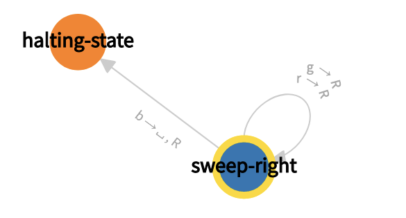
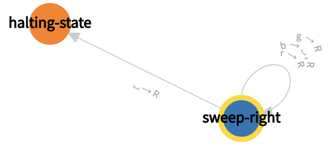
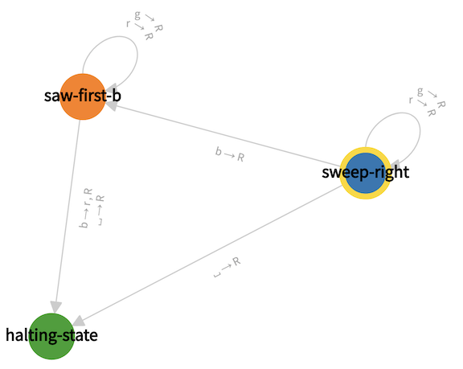
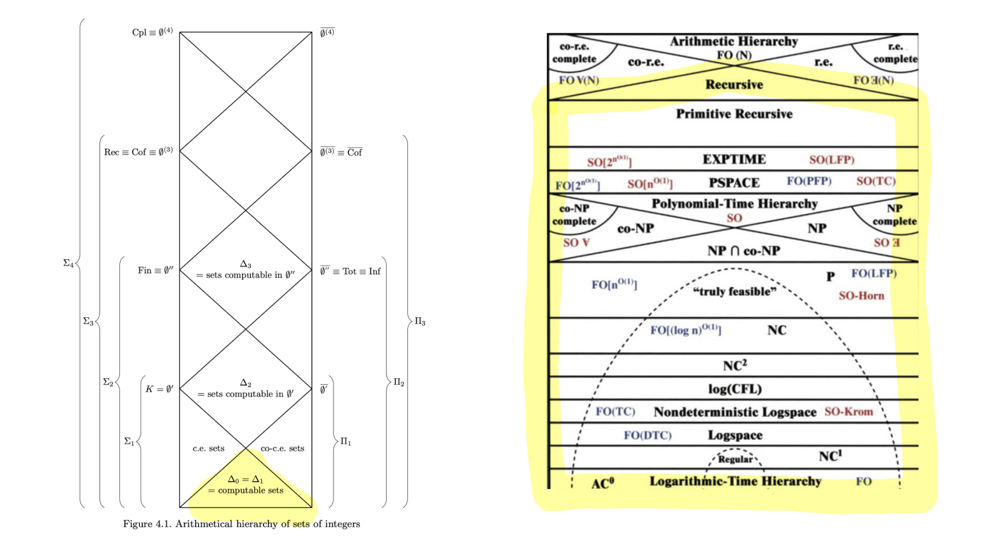

Chapter 3#
We turn to Turing’s 1937 notion of computation ([Turing, 1937]), which is the received ‘model’ of computation still used today. In general, the idea is: a Turing machine program is a set of instructions for the bounded and local action of an idealized agent. The actions are limited to reading and writing symbols, and the actions are defined in terms of an agent’s internal states. The computation of the machine is then the deterministic compliance with the instructions in response to a single piece of external stimuli.
Turing machines#
The components of a Turing machine#
The machines in question input strings and output strings that come from a finite list of symbols, say \(s_1, \ldots, s_{\ell}\) (usually numbers or letters).
The hardware of the Turing machine is an infinite two-way piece of tape on which the input finite string is written (the sense of “tape” is: “long piece of paper”) and a machine head which sits above the tape and can read and write the contents of the cell over which it is sitting, it can move one cell to the right (\(R\)), or it can move one cell to the left (\(L\)), and it can switch its state.
The states are finite in number \(q_1, \ldots, q_k\) and used in conjunction with a program to instruct the machine how to move.
Definition (Turing machine program)#
A Turing machine program consists of a specification of an initial state and a halting state and a finite set of instructions for the machine head of the following form:
“If you (the machine head) are in state \(q_i\) and read symbol \(s_m\) on the cell of the tape below you, then write symbol \(s_n\) on the cell below you, switch to state \(q_j\), and move one cell to the right (or left).”
We abbreviate such an instruction as \((q_i, s_m, s_n, q_j, d)\) where \(d\) is either \(R\) (for right) or \(L\) (for left).
As the formulation of the instruction suggests, it is not allowed for there to be a pair \((q_i, s_m, s_n, q_j, d)\) and \((q_i, s_m, s_{n^{\prime}}, q_{j^{\prime}}, d^{\prime})\) in a given Turing machine program wherein \((s_n, q_j, d)\) is distinct from \((s_{n^{\prime}}, q_{j^{\prime}}, d^{\prime})\), since this would correspond to two contrary instructions.
The meaning of states#
The states \(q_1, \ldots, q_k\) have no intrinsic meaning, and are characterised only by the role that they play within how these finitely many practical conditionals act in concert with the hardware of the tape and machine head.
Sometimes states are called “internal states” to indicate that it is only in the context of the internal functioning of the machine that they have significance.
Turing machine program vs. Turing machine#
Each such program has the same hardware (the machine head and tape), and so often people just abbreviate Turing machine program as Turing machine, since they take the hardware description to be already fixed, and we will slip into that usage fairly quickly.
The list of Turing machine programs#
Finally, in terms of notation, \(M,N\) are often used for Turing machine programs. Since each Turing machine is a finite set of instructions, there are only countably many Turing machines, and so it is also typical to see them listed as \(\varphi_0, \varphi_1, \varphi_2, \ldots\) or as \(\Phi_0, \Phi_1, \Phi_2, \ldots\).
Visualizing Turing machines#
Turing machine programs are best understood by way of example, and with visualisation. There are many helpful Turing machine visualisers. We use one freely available one at http://turingmachine.io/.
In this visualizer, the five-tuples are written in one of the following four forms:
Option 1
state-i:
symbol-m : {write: symbol-n, R: state-j}
The intended meaning of this instruction is:
if you are in state-i, and if you read symbol-m then write symbol-n and move one cell to the right and go into state-j
Option 2
state-i:
symbol-m : {R: state-j}
The intended meaning of this instruction is: if you are in state-i, and if you read symbol-m then write nothing and move one cell to the right and go into state-j
Option 3
state-i:
symbol-m : {write: symbol-n, L: state-j}
The intended meaning of this instruction is: if you are in state-i, and if you read symbol-m then write symbol-n and move one cell to the left and go into state-j
Option 4:
state-i:
symbol-m : {L: state-j}
The intended meaning of this instruction is: if you are in state-i, and if you read symbol-m then write nothing and move one cell to the left and go into state-j
A couple of notational observations.
First, we are still using \(R\) for right and \(L\) for left.
Second, the names for the states are arbitrary– one can choose anything you want, so long as it is one word (perhaps separated by hyphens). The symbols we read and write on the tape are either numbers or single letters with single-quotes around them, like \(a\).
Third, we group all of the instructions about what to do if you are in a given state together.
Fourth, the visualiser creates an arrow diagram from the program in which all these conditionals are represented as arrows in-between the states. The diagrammatic convention for the arrow diagram is the states are the points, and the arrows are between the states, and the label on the arrow indicates what the machine is supposed to do in-between when it reads the state at the start of the arrow and switches to the state at the close of the arrow.
Example 1
In this example, we imagine that our machine head is an animal-like creature who is encountering the colours red, blue, green, so that the symbols are only three in number \(r\), \(b\), \(g\).
#Example 1: find the first b and delete it
input: 'rrrggrbrbrr'
blank: ' '
start state: sweep-right
table:
sweep-right:
'r' : {R: sweep-right}
'b' : {write: ' ', R: halting-state}
'g' : {R: sweep-right}
halting-state:
The intuitive description of the commands in the table are as follows:
if you are in the sweep-right state
and if you read ‘r’ then write nothing and move one cell to the right and go into sweep-right state
and if you read ‘b’ then write a blank ‘ ‘ and move one cell to the right and go into the halting-state
and if you read ‘g’ then write nothing and move one cell to the right and go into the sweep-right state if you are halting-state then do nothing
Here is the state diagram of Example 1:

There are only two circles since there are only two states in the program. Since there are only two instructions in the program, there are only two arrows.
Since both these instructions begin with reading the sweep-right state, both of the arrows begin at the sweep-right state.
The arrow head of the arrow from sweep-right to itself is a little obscured by the word “sweep-right.”
Note that there are two expressions on this arrow from sweep-right to itself, since when shifting from this state to itself, there are two separate actions that the machine can take (if it sees \(g\) it moves right, and if it sees \(r\) it moves right). The symbol on the arrow from the sweep-right state to the halting state is a traditional choice for describing the “blank” symbol which features in the Turing machine program and written in the program just as ‘ ‘.
Example 2#
This next program finds and deletes not just the first \(b\), but all the \(b\)’s:
#Example 2: find and delete all b's
input: 'rrrggrbrbrr'
blank: ' '
start state: sweep-right
table:
sweep-right:
'r' : {R: sweep-right}
'b' : {write: ' ', R: sweep-right}
'g' : {R: sweep-right}
' ' : {R: halting-state}
halting-state:
This program differs from the Example 1 in the line pertaining to what happens when you are in the sweep-right state and you see a \(b\).
Whereas Example 1 switched into the halting state after reading a \(b\) and then deleted it,
Example 2 stays in the sweep-right state after reading a \(b\).
We then add a line which tells the machine to go into the halting-state when it reads a blank.
Here is the state diagram for this Turing machine program:

We again have two states and two arrows. But above the arrow from sweep-right to itself, we have three pieces of information, since when shifting from this state to itself, the machine takes three separate actions, depending on what it sees on the tape below. And in this Turing machine program, we move from sweep-right to halting-state only if we see a blank.
Finally, note that there was a kind of redundancy in our program, since we did the same thing when we read a ‘r’ as when we read a ‘g’. We can simplify this as
#Example 2 revised: find and delete all b's
input: 'rrrggrbrbrr'
blank: ' '
start state: sweep-right
table:
sweep-right:
['r', 'g'] : {R: sweep-right}
'b' : {write: ' ', R: sweep-right}
' ' : {R: halting-state}
halting-state:
The brackets \([\ldots]\) has the sense of: if you read any symbol listed in the brackets, then take the action described after the brackets.
Using states to remember, example 3
The Turing machine programs are allowed to have an arbitrarily large number of states. One elementary application of this is to use them as a kind of short-term memory to retain what has been recently seen or done.
#Example 3 : finds the second b and changes it to an r
input: 'rrrggrbrbbrr'
blank: ' '
start state: sweep-right
table:
sweep-right:
'r' : {R: sweep-right}
'b' : {R: saw-first-b}
'g' : {R: sweep-right}
' ' : {R: halting-state}
saw-first-b:
'r' : {R: saw-first-b}
'b' : {write: 'r', R: halting-state}
'g' : {R: saw-first-b}
' ' : {R: halting-state}
halting-state:
The program begins by sweeping-right, and when it sees a \(b\), it switches into the state saw-first \(b\). In this state, it then looks for another \(b\) and changes it to an \(r\).
Here is the state diagram for this Turing machine program:

There are three states in this Turing machine model and so three circles. Perhaps what is distinctive about this diagram, in contradistinction to the previous diagrams, is that the arrow marking the transition from the saw-first-\(b\) state to the halting-state has two labels on it, reflective of the fact that there are two circumstances in which it makes this transition: first if it sees another \(b\) (in which case it changes it to an \(r\)), and second if it sees a blank (this would happen if there was no second \(b\)).
Turing on Turing machines#
The most philosophically rich section of Turing’s 1937 paper is section 9. He says ([Turing, 1937] p. 249):
No attempt has yet been made to show that the “computable” numbers include all numbers which would naturally be regarded as computable. All arguments which can be given are bound to be, fundamentally, appeals to intuition, and for this reason rather unsatisfactory mathematically. The real question at issue is “What are the possible processes which can be carried out in computing a number?”
The arguments which I shall use are of three kinds.
(a) A direct appeal to intuition
(b) A proof of the equivalence of two definitions (in case the new definition has greater intuitive appeal).
(c) Giving examples of a large classes of numbers which are computable.
Today we are going to focus on the arguments which Turing classes under the first option
(a) A direct appeal to intuition
It is clear that Turing means by “intuition” roughly what we mean: a wholesome amalgam of gut-reactions, untutored views, and common-sense. That is, he does not mean Hilbert’s sense of “intuition” as a Kantian quasi-perceptual cognitive ability.
Turing thought the important question was: “What are the possible processes which can be carried out in computing a number?”
His answer to this question involved a thought experiment pertaining to what a human “computer” could do– “computer” was at Turing’s time a name for a kind of work or occupation.
He thought
We may suppose that there is a bound \(B\) to the number of the symbols or squares which the computer can observe at one moment. […] I think that it is reasonable to suppose that they can only be squares whose distance from the closest of the immediately previously observed squares does not exceed a fixed amount [\(L\)] ([Turing, 1937] p. 250)
As one can see, Turing seems to be taking himself to be setting out sensible limits on human cognition.
Turing’s student Gandy (and later Sieg) thematized \(B\) and \(L\) as the ‘boundedness and locality’ conditions. Gandy took them to be contraints on certain kind of machines as opposed to Turing’s focus on human computation.
From the contemporary perspective, one wants to know more about the nature of mental states which Turing was appealing to, since he obviously thinks that they are well-represented by the internal states of a Turing machine. The text is sparse here and all occurs on pp. 250-251.
We get claim that states of mind, together with observations, determine actions, and later we are told that these actions determine the subsequent states of mind:
The behaviour of the computor at any moment is determinedy by the symbols which he is observing, and his “state of mind” at that moment ([Turing, 1937] p. 250).
In particular they determine the state of mind of the computer after the operation is carried out ([Turing, 1937] p. 251)
We get an argument that states of mind are finite in number:
If we admitted an infinity of states of mind, some of them will be “arbitrarily close” to one another and will be confused. Again, the restriction is not one which seriously affects computation, since the use of more complicated states of mind can be avoided by writing more symbols on the tape ([Turing, 1937] p. 250).
The most important contemporary commentator on these pages of Turing is Sieg.
He calls Turing’s central thesis the claim that
the calculations of a computor can be mimicked by a particular kind of machine ([Sieg, 2009] p. 593)
Hence, it is the claim that anything that a human mind of a certain kind (‘a computor’) can do, a certain kind of machine (his kind of machine) can do.
Sieg is concerned that we aren’t given an argument for Turing’s restrictions on ([Sieg, 2009] p. 593):
‘what symbolic configurations’ are.
‘what changes mechnical operations can effect.’
The universal machine and diagonalization#
The universal machine#
Since there are only countably many machines, let us enumerate them as \(\varphi_0, \varphi_1, \varphi_2, \ldots\)
A key fact about Turing machines is that there is a specific Turing machine \(\varphi_{e_0}\) such that for all other Turing machines \(\varphi_e\), one has \(\varphi_{e_0}(e,n) \cong \varphi_e(n)\) for all inputs \(n\).
This is called a universal machine.
The notation \( \cong\) means that if either reaches a halting state, then the other does, and they have the same result on the tape.
Here I am appealing to a convention whereby we code numbers as strings in some natural way.
The existence of the universal machine#
Why should there exist a universal machine?
Well, each program is just a finite set of instructions about a finite set of symbols, which we can represent as a finite string of symbols.
Hence, program \(e_0\) on input \((e,n)\) just inspects \(e\) and figures out which (if any) Turing machine program it represents, and then it proceeds to run input \(n\) on this Turing machine program.
Are there more details? Yes. Are the more details illuminating? No.
In each case, it is mostly just because it is complicated to learn to program Turing machines themselves. The ‘hardware’ is so built into the instruction sets that one has to spend a lot of time learning how to get the machine head to go back and forth in the right way. And then one will have to settle on some representation device whereby the infinitely many possible symbols are represented as strings in some finite alphabet.
Diagonalization and the halting set#
Consider the following set of natural numbers, called the “halting set”
where the downarrow indicates that the computation converges.
That is, the halting set is the set of indexes of Turing machine programs \(e\) such that when you input the code \(e\) into the program \(\varphi_e\), the resulting computation converges.
The argument that the halting set is not computable
Again, \(K = \{e: \varphi_e(e)\downarrow\}\).
Here is the traditional argument that \(K\) is not computable by a Turing machine.
Suppose not. Then the following program, call it \(i\), is a Turing program:
def φ_i(n):
if n in K:
return φ_n(n)+1
else:
return 0
Then we get a contradiction as follows.
Case 1: if \(i\) in \(K\), then \(\varphi_i(i)=\varphi_i(i)+1\) and both computations converge by definition of \(K\).
Case 2: if \(i\) not in \(K\), then \(\varphi_i(i)=0\), and so does converge, contradicting the definition of “not being in \(K\).”
In both cases, we get a contradiction.
Key definitions#
There are a couple of definitions which we used in the previous proofs which we should make explicit.
Definition (computable)#
A set of natural numbers \(A\) is computable if there is a Turing machine program \(i\) such that
for all natural numbers \(n\), one has \(\varphi_i(n)\downarrow\) and \(\varphi_i(n)\downarrow=0\) or \(\varphi_i(n)\downarrow=1\)
for all natural numbers \(n\), one has \(n\) in \(A\) iff \(\varphi_i(n)=1\).
Definition (halting)#
If \(i\) is an index for a Turing machine program and \(n\) is a natural number, then we say “the program \(i\) halts on input \(n\)”, written \(\varphi_i(n)\downarrow\), if when you run the program with input \(n\), then it eventually reaches a halting state.
The negation of \(\varphi_i(n)\downarrow\) is writen \(\varphi_i(n)\uparrow\), that is, this indicates that the program does not halt.
What is a halting state? It is just a state of the machine that doesn’t have any further instructions in the program about what to do if you see that state.
On the terminology of computable and recursive and effective#
First, on terminology:
Synonyms for computable are recursive or decidable.
Different communities have strong views about which you should use; I will tend to stick with computable.
Sometimes effective means the same thing as computable and recursive.
Othertimes effective can be used in a broader sense.
On what kind of symbols one computes on#
The definition was in terms of computability of sets of numbers, because we can think about Turing machines inputting and outputting numbers.
More generally, Turing machines input and output strings from a finite alphabet, and hence you can think about the computabilty of sets of such strings. And you can ‘encode’ a bunch of things in such strings, like finite graphs or finite polynomials or formulas.
In some sense this is a conventional choice: you have to choose ‘what kind of thing gets computed’, but your choice will probably be dictated by interest at hand, and any two reasonable choices usually end up not formally changing much.
The map, revisited#
This is the map with the computable / recursive sets highlighted (see here for a standalone version without the highlighting.)
